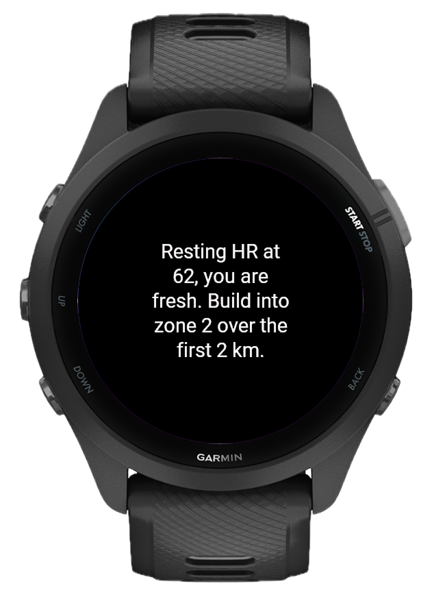
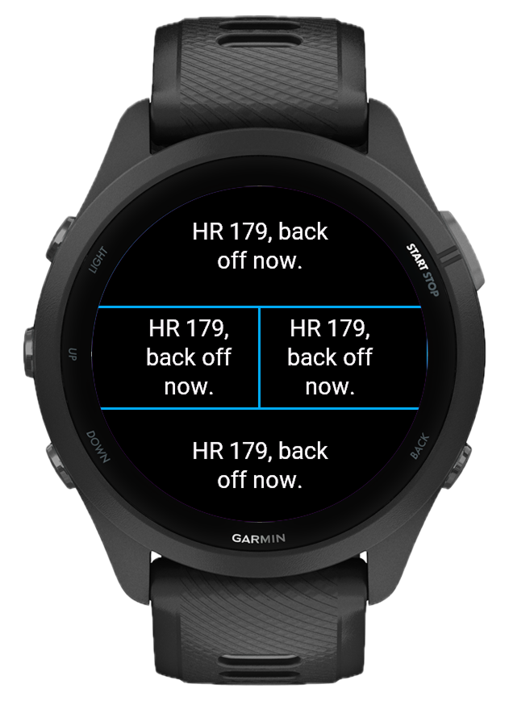
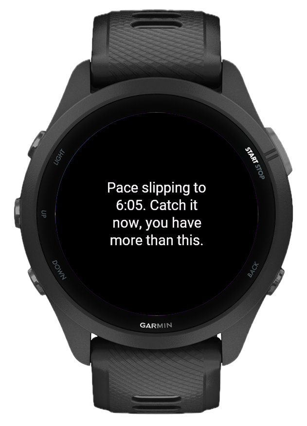
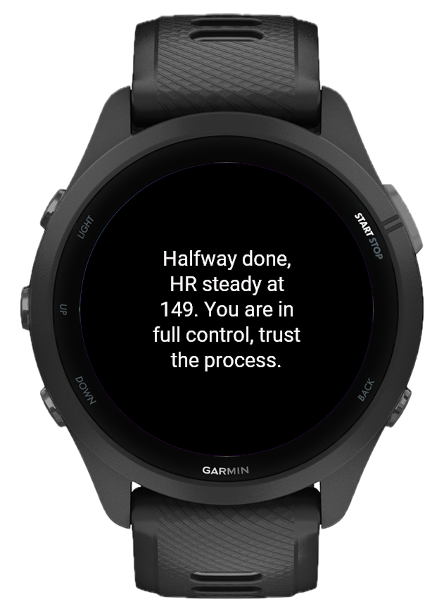
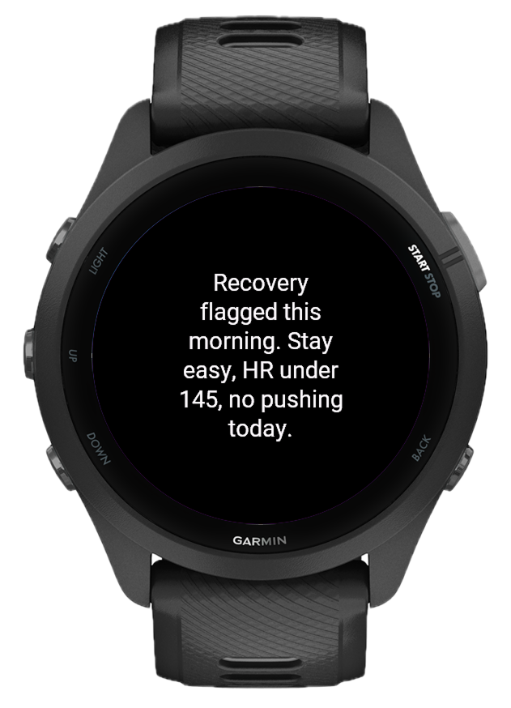
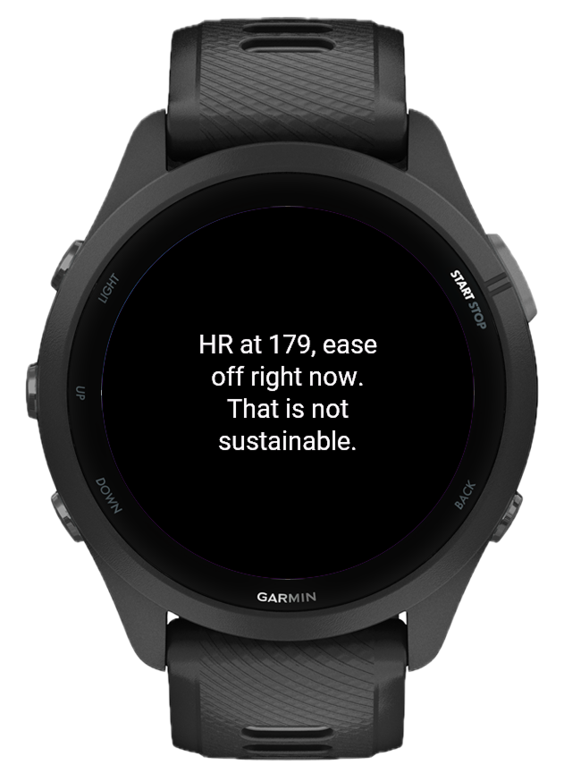

Training alone is hard
A good coach notices when your form slips around kilometre four. They know when to push you and when to pull back, adjusting based on how you look today. Your Garmin is full of biometric data, but none of it talks back. CoachPulse connects that data to an AI and turns it into live coaching cues right on your watch screen while you are still moving.

How it works
CoachPulse runs as a data field inside any Garmin activity. When something notable happens, it packages your current metrics and sends a prompt to the AI model of your choice. The cue comes back and appears on screen. No app switch, no phone unlock. You bring your own API key from OpenAI, Anthropic Claude, or Google Gemini.

What triggers a coaching cue
CoachPulse fires at meaningful moments: a session briefing at workout start, kilometre and time milestones, sustained high effort (zone 3+ for too long), pace drops below your session average, and a final debrief when you stop the timer. Want a word right now? Press the lap button and the coach reads your effort and cues the next lap. A periodic check-in interval is also available, and every trigger can be turned on or off individually.

Your session, your goal
Set a short session goal before you head out: "easy recovery run", "tempo intervals, stay in zone 3", "long slow distance". That goal travels with every prompt CoachPulse sends. A cue during a recovery run sounds different from one during a race-pace effort, even if the biometrics look similar.

Pick who is in your corner
Every athlete responds to a different voice. Choose from 7 coach personas: the classic Supportive Partner, a barking Drill Sergeant, a clinical Sports Scientist who cites your numbers, a Zen Master who cues breath and form, a gruff Old-School Trainer, a Hype Friend who celebrates every kilometre, or a Race Tactician who thinks in splits. Then dial in Push Level from Relaxed to Aggressive, because voice and intensity are separate things: a Zen Master at level 5 will calmly demand your best, and a Drill Sergeant at level 1 will loudly protect your recovery day. Want more? Custom Coach Notes let you type anything on top: your language, your quirks, your race.

A pacing strategist on your wrist
Set a race target and a goal time, from a 5K to a marathon, 100K ultras, or full-distance bike legs, and every cue starts thinking like a race strategist. CoachPulse computes your required pace and tracks the gap live: how many seconds ahead or behind plan you are and your projected finish. Forty seconds up at halfway? A good coach tells you to bank nothing and hold back. Slipping behind at 30K? It tells you exactly what pace buys it back. That is what Race Mode does, on every trigger, all race long.
A coach that remembers you
Real coaching does not start at kilometre one and end at the finish line. CoachPulse opens each session with a briefing that reads your body battery, sleep, and training load and sets the intent for today. When you stop the timer, it closes with a debrief: the takeaway that matters, backed by a number. And here is the part no data field has done before: it remembers. Notes from your last 8 workouts, what sport, when, and how it went, travel into the next briefing. Skip three days and your coach knows. String together a great week and your coach knows that too.
Every word earns its place
Control how much the AI weighs fatigue signals with Recovery Focus. Set Response Length to Short, Normal, or Long as your baseline. The new Auto font size picks the largest font that fits each message and shrinks only when needed, while an explicit Small, Medium, or Large stays exactly that size and the coach simply writes shorter. Either way, every cue is sized to your field, whether you run a full-screen layout or a compact split.
Smart enough to leave you alone
After a cue fires, CoachPulse enters a cooldown. No new cues until the timer expires. The default is 5 minutes. A coach who speaks every 30 seconds stops being a coach and starts being a distraction. The last cue stays on screen until replaced, so you never miss it mid-stride.

Using CoachPulse on your watch
CoachPulse is a data field, not a standalone app. You add it to a data screen inside an existing activity profile.
Setup steps
What the screen shows: idle shows "Monitoring..." in white, fetching shows "Preparing..." in grey, a cue appears centred in white, errors in orange. If the API key is missing a yellow prompt reminds you to set it.
All settings, explained
All settings are configured through the Garmin Connect IQ app on your phone. Changes take effect the next time you start an activity.
Supported watches
CoachPulse works on Garmin devices that support Connect IQ data fields with the Communications permission, covering most Fenix, Forerunner, Epix, Venu, Marq, and Instinct models from the last several years. A phone with Garmin Connect is required to relay AI requests during a workout.
What's new
- Renamed the Coaching Style setting to Push Level to make its job clear: it controls how hard the coach pushes you, while the new Coach Persona controls the voice; a Zen Master at push level 5 will calmly demand your best, and a Drill Sergeant at level 1 will loudly protect your easy day
- Reworded the five push levels sent to the AI to be purely about training intensity (from "enjoyment only, never push" to "demand maximum effort within safety limits"), removing tone wording that could conflict with the selected persona
- Coach Personas: pick who is talking to you from 7 voices, including Supportive Partner (the classic tone), Drill Sergeant, Sports Scientist, Zen Master, Old-School Trainer, Hype Friend, and Race Tactician
- Custom Coach Notes: a free-text field that layers on top of any persona, for things like "respond in Croatian", "I am training for Ironman Zurich", or any coaching quirk you want; it can shape tone, language, and content but never breaks the safety rules
- Race Mode: set a target distance (5K up to Marathon and 100K ultras, plus 40K, 90K, and 180K bike legs) and a goal time, and every cue knows your required pace, how many seconds ahead or behind plan you are, and your projected finish, so the AI coaches the gap, not just the moment
- Pre-workout briefing: the workout start cue is now a proper session brief that uses your recovery state and recent workouts to set the intent for today
- Lap Coach: press the lap button and the coach answers with a read of your effort and a cue for the next lap; works with auto-lap too and skips the usual cooldown since you asked for it (off by default, enable it in settings)
- Workout debrief: when you stop the timer the coach delivers a final summary with the most important takeaway from the session (on by default)
- Coach memory: the watch keeps notes from your last 8 workouts (sport, date, and the debrief takeaway) and feeds them into the next briefing and debrief, so the coach remembers how your training has been going; only workouts where CoachPulse ran are included, and it can be turned off in settings
- Auto font size: the new default picks the largest font that fits each message and shrinks automatically when needed; choosing an explicit Small, Medium, or Large keeps that exact size and the AI is asked for shorter cues that fit it
- Every message now follows the same fit rules regardless of trigger, so briefings, lap reads, and debriefs are sized to your field just like regular cues
- Race pace is shown in km/h or mph for cycling targets and min/km or min/mi for everything else
- Settings reorganized into clear groups: connection, session intent (goal and race target), coach voice, coach memory, and triggers, so related options sit next to each other
- Responses that got cut short (reasoning or thinking consuming the token budget) are now automatically retried once with a larger budget instead of showing a truncated or missing cue
- If a model still fails after that retry, the app now falls back once to a smaller, cheaper model from the same provider instead of giving up, so a cue still gets delivered
- Removed the Opus and GPT Pro tiers from the model list to keep cost predictable for everyone
- Removed GPT-5.6 Luna and Gemini 3.5 Flash after testing showed they were unreliable for this use case: Luna is a reasoning model that could silently eat the entire token budget, and Gemini 3.5 Flash responded 50 to 60 times slower than the other Gemini option, causing timeouts
- Fixed slow key validation on Gemini models that default to adaptive thinking, which was causing the "Checking..." screen to hang for many seconds before timing out
- New Font Size setting with three levels (Small, Medium, Large); Small remains the default
- Updated to current model lineups across all three providers and removed retired or discontinued models
- Gemini responses were getting cut off mid-sentence because the model's internal reasoning was silently consuming the response token budget; the reasoning budget is now disabled so the full budget goes to the visible coaching cue
- Gemini API key validation was not catching invalid keys, since Gemini reports a bad key as a different error code than OpenAI and Claude do; invalid Gemini keys now correctly show the setup prompt
- Claude Sonnet responses were occasionally dropped entirely because the model defaults to internal reasoning that could consume the whole response budget, leaving nothing for the coaching cue; reasoning is now disabled for Claude requests so the full budget goes to the cue
- API key is validated at startup with a quick ping before the activity begins; "Checking..." is shown while validating, and if the key is rejected (401 or 403) the setup prompt appears immediately instead of waiting silently for the first trigger to fail
- AI prompt now includes full athlete profile: age (derived from birth year), gender, height, weight, resting heart rate, average resting heart rate, and VO2max for running and cycling
- Heart rate zones now use the Activity.Sport type directly via getHeartRateZones2, giving accurate sport-specific zones for every sport rather than only running, cycling, and swimming
- HR zone boundaries were off by one: the minimum zone 1 threshold was being used as the zone 1 upper boundary, causing all zone assignments to read one zone lower than the actual value; corrected across zone detection, prompt output, and trigger thresholds
- All triggers (HR alerts, milestones, pace drop, periodic check-in) are now blocked until the activity timer is running; no AI calls fire on the pre-start screen
- Periodic check-in interval now counts from the moment you press START, not from when the data field loads
- Field shows "Awaiting Start" instead of "Monitoring..." while waiting for the activity timer to begin
- HR buffer continues filling during pre-start so spike detection has an accurate baseline the moment the timer starts
- Real-time AI coaching data field for Garmin watches
- Support for OpenAI, Anthropic Claude, and Google Gemini via a single unified API key setting
- 9 model options across all three providers (GPT-5.5 Pro, GPT-5.4 mini, GPT-5.4 nano, Claude Opus 4.7, Claude Sonnet 4.6, Claude Haiku 4.6, Gemini 2.5 Pro, Gemini 2.5 Flash, Gemini 2.5 Flash Lite)
- Session goal field: describe your workout intent and the AI coaches toward it
- Coaching style selector: 5 levels from Relaxed to Aggressive
- Recovery focus selector: 5 levels from Ignore to Maximum
- Response length selector: Short (5 to 6 words), Normal (5 to 9 words), Long (12 to 25 words)
- Configurable trigger system: workout start cue, kilometre and time milestone cues, sustained effort check-in, pace drop alert
- Periodic check-in interval: optional fixed-interval cues every N minutes
- Effort threshold setting: configurable minutes in zone 3+ before effort check-in fires
- Cooldown between cues: 15 to 600 seconds, default 300 seconds
- Text wraps automatically and fills the full available field width; fixed one-word-per-line issue that occurred in narrow or bezel-padded layouts
- Response word count adapts to the actual data field dimensions. The same setting displays cleanly across full-screen layouts and small split slots
- API key validation prompt shown on screen if key is missing
- Support for 80+ Garmin devices including Fenix 7/8, Forerunner 265/965/970, Epix 2, Venu 3, Instinct 3, and more
- Sport-specific HR zones: running, cycling, and swimming activities use their respective calibrated zones instead of the generic profile
- Unit system detection: pace and speed adapt to the device's km or miles preference automatically
- Extended distance milestones at 50km and 100km for ultra events; extended time milestones at 3h and 4h for long efforts
- HR Alerts toggle: zone breach and HR spike cues can now be turned on or off independently alongside other trigger settings
- Provider and model mismatch detected before any API call and surfaced as a clear on-screen message
- Session memory: AI tracks its own cues across the entire activity; OpenAI uses server-side conversation threading, Claude and Gemini receive the last several cues in the system prompt to avoid repetition and build context over time
- Session memory toggle: choose stateful (session memory on) or stateless (each cue is independent) per workout
- History Size setting: configure how many past responses Claude and Gemini receive as context, from 3 to 20, default 10